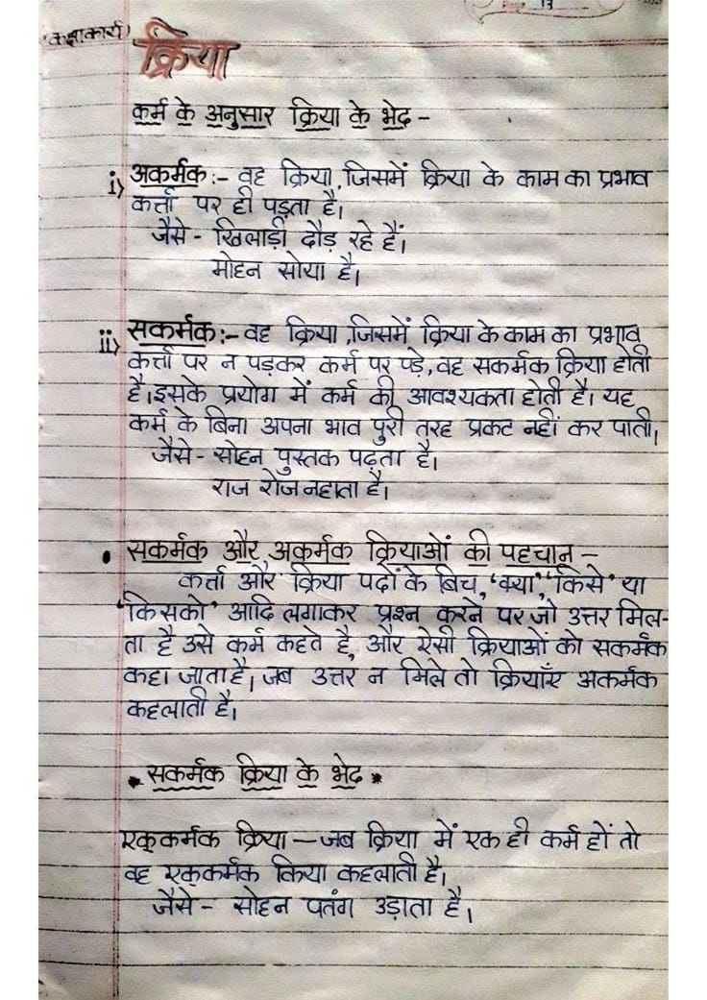

File: hin_sample_04.jpg

aoe SS हक se or —————— iter ba - जब 3 3 अकर्गक :- तह क्रिया जिसमें क्रिया aman tere "are UR aha ; जज 55 {She Wickes et a 2. Ae ee SCR ae Ta eT क्रिया के काम ST om SN tl पर न पड़कर कर्म पर प्ड़े-वह सकर्मक क्रिया होती: ee eae आवश्यकता tat ere aa के लिना अपना sa प्रकट नहीं eT, oe) SS aa tee ee =e a eee बन जो eens ओर sete कियाओं की corre | “जय करती ओर के Wu, San tea a Sema उत्तर मिल लक pal कहते हे क्रियाओं का सकमेक्त “कहा जूताड़ें| जब उत्तर न जिल्ले तो क्रिया अकर्मका है Geese = जूक Pees क्रिया es उद फेकएलकलते एचत्नना = व eee कि ५ -— eae een क्रिया में एकडी ahaa 4 e एककर्मक किया aera = = सोहन पतंग उड़ाता 2 "०7 ea i
मिल et Meet 4 eS ऊ बर नमन A टण क 2758 2 / 2 % a Jn नर 92870 ९ पा कप: न पत्र ae स्पा या 2; RTE ey मय os Siac 72772 200 Baar ee ee ear eee Gate cee Pa: 0742५ rain va CASE er ‘Stee Bop tete 222 “777 a fps Sed SOC SESE RN EGS: DEES Sees Sees a नकल Sate) ERD) (80247 77825: = Taine ac Runa ce aver (230 88, IE पड See Beas Brier /p 2 REE परत as (05 22 4८ 42072 (8 अप nee CESS Nr कक पिया etic wear oe जप TIMMS? eae पक 2०८ Sager किया करे oe See fe 8037: eS ang i Say ctl Sa 2 कर: SEA UE re eae कि भेद दि सर Pena enct sie an so Sev मजे ant iy aN a Ch: 3०2 टला 3:30 Soe = poe ee co]: cpa EN ent NE Taran लक जेट स्छ Hl Cs pf al i Serer Sa oe ere eT pe EAMES eae ta Sea rate A Sates ReaD | Proves Fou Ebe a be Tae eS ES करिय्कि वे ५2245 Suen gape 2402 ey TUG VRS ene Let Saree CN IGS REE TST: Fou Se eas ig NEE के काओ DY OSI: SSE eS ik fect Sp 2 2022: ८02०० a गे a CD SY PBEM IRE GEOR ET Gas 5275 Lp RS Poon SURE Ras RAO Cay Nate Coe See सा जकमक 5 EGO Sees ४7792: दलित ea epi = eae \ ००742 ०६६ टी ८८0) Peat gee / E> Pinta ॥ reese फट ee 20: 2 cette फेज: 2007: ED मिट idle. (ee पर Tet SoG Bi: ८5220 ae eva 7 Ee Tay Eee pe SS aes Soe ee a eet aie (7: पक 7220 (07727 2 WEEN A Ne SGISZNES ENGR SERENE «oe ae डक EN कसर led OI PRR NRTA का 7 7७2६3: es गन Berra RMSE Ty es ERD es Ce po pede MER RSS BES 22027: UE RS — 57 Te [RE REE ees UES Ese (Scere ASSL LBRURSE OR I ५ ५८, 20: ne Sega ey eres seREF Hl SU SG 75022: 5-0 Steines aS ee Ree eae cana 9 ee PEST ye bb लडकिया We ORI बल 5 मय जज Kes pov asoery पक oe POR S ead ERS GRU OE ON ae = bs ag g eos eee Pa baG Se See Ich. cole: क्रिया Ag oe era 9 ° De GAT WE, TSE a 7 © a pay EN Te ४८२४ aus Gentine dail CR ian ees Jie परेलःपड Tarps Ryscucwt= ee ka FAV = aay Salch cae SATE 020 en ona Ahetalr, EASES Be ere ER eR ४२०१७ = उकाज्आावइराक iN Uy: "Oy eee eyed pee SE Hop SON Td chu NEDA N ER ES Nea Cy 357 Ses Sooo (23 her Cae Wey Ce = are © aan fee QMO). naa AS =U} AGE RSL SRN REN | TTI Grows (2 te aN NSA ON FE न रजत: AIC sitter ber, ce Hee LR PR ce Mae rete setae है (xt eePrareeEES : ie ee [ery Baas (a Pas PING AN S| nite acer 00220 2202 42 रमन मजा वि कर आल मिल NSN पक SRE EA a eee Ba ee oY =] Ra ial ete ERRORS ese पद V8 Nate a [4९ apa an eater Oa नम ene Ge rie: ee Qe Peal 707, 2२६५ es Spee = UNAS HOSS Cag Siete ee Res sy So SEES Ses oe SG URNS CAE qe 22222 ape gee oy EES SS 2202 270 ees eros Oe Py cs ete 02080 ets? मत OMS cpieg exile aes २ 25:75 SR मन Bra eae रस. = eS OSN Se ike, Ngai aa a ee = fee ee तक लिन dete eis =e (255 707 Geer er Wehoewe >कया: दाद ee Na ane eae = Grd (6 ह4| a8 Fe ARTO NRE ९022 : [oe soe Dae OSU ea 47040 72 SU esleSties ele fs FR a Revers, C20 TIS ERS ES छ Fran su fs Bes bE SE RE al SEG 40220 00.8, x SUL EREE 0०: 2 ZUdUCHN Ke ARal sexe NIRS ZON ces | दि पा ; टाटा पोज मी पल पर फट को 32.2५ २५ पल: 35 = PDE AI: vad fe ate fee एम व ह्क््शास्ड्खं % BA ४४25४ 7१:८2 ८:४० Pets ०००८ HAE Yes “Hae DIET toed) RNR ay 00.22 00062 व्रत ता/ तट जय 22 CEE RUNS 422: GAO PMO | 3 aad EN aD 008 Vagal S 0 000 3 व्यय SMepaAsh asl Marra et SEE रिक्ति islet aes Sera [ete 5 ४] : us >> eS ra a ea aN er PRE मनिक शा Matte py Sener ee ec EU LEGAL ON Scent हट Re TB ae Sate yess 72022. 200 5 "78 anh ee ERE BE ANTE 527s SE cand eae ह्गातोः Us een) SPD = ee TS CMe SE oar i cena tua ५ RS a ——— SEIT Se ea Bee de 524 ORS RL | Reamer ering: मय Nig ee मत TE Fre Retina 2: egies Soe SIPS | RSA Se SES sr gesecet ents Sea फिया, LSE RE SS ——= SETTERS OME न लि ता | j Vice RT: mort i areas chert Sp NOPD SOM Sows ae SEC कक | 2५ ८22... ५... 5 et 27०4० टय MESES, 2.०2 2४: _ a | eT roy i a Sue ४7:25: :...:4,५ 7.74: Pet Cem RCT OTE st EERE NUE NO oer ere Sadar eae Peeps की टी तीर, AGES 24 Brae (ess eres TS SL SS GaN ERS SR eR Reed] bomen SETAE 2200 85९७४ :४ eee et " Bele Sects 7 5 कप 2८52 2 wd Ce - Wear poe oe ae आम ih 42222 ae — oe ela SSE es ed ea Soren See SSG क गकेगारकड्ल alf Phe stage apace : 3 Saeed | Reese, ~~. ASS 00360 38222 2 >> कै 33 aay KT) 285४ ५५४ = Ree | ORE SES BCDC 2 ICSE a RE USSR eee RRS e Nectar | Be ormaiet peERe Ts “25S(¢ far sa 70227: evita + ROAR ————— =o भय RET Ren afer ees oe गण जन धगता मम विज a ee RO IEE SES SSS ee टन Saige दा मल (045: ene eae — ont 77773 Re EAS CRO eas WR ish aan veces Lane TL Sette Pian en 5202: 0०22 STANTS मकर ere gaaebet | Pat 223 जम 07 प्र TREE CS ep Sa! EES Be Bees ied 22272 SS Roa PBS ep fe 27०६ eb Beech Sea On Oe eee Lee ane ४ ae SOURS कि SE aon oe ae a EEO न ee REEDS ओपन 2209: 2: ese 52 Settee Par
क्रिया कर्म के अनुसार क्रिया के भ्रेद अकर्मक कत्त जैसे दे साया पाते प्रकट न्हांकर जेंसे पुस्तक पढ़ता सष्न कर्त्त ओर या कसको प्रश्न करन कद्दा जातादे जब उत्तर नोमलता क्रयार अकर्मक कदृलाता दै सकर्मक जेसे उड़ाता
❌ OCR Failed
उपास्न
कुकक्षबरड़ं नेण ई अ्नुखा कुणाड़े केहूं भेढ़ ई अदर्रकः इह क्रष गजसमें क्र्ा के वावनाब प्रंगेबि बादं षध ही जैसे गी पुक्षरु सी है ई खुबसाड़ो दौड़ दहेहों मोहन खोोया है। गुदे ड सबरमकुरुदह क्रिया जजसमें क्या केकाम ब प्रभूबू बेराता घ ज पड़ंबेस कर्म पर्पड़-बह सवावेब रिणा होता नै हैइसके प्रयोग में कर्म बेयू ९ अबरश्यवक्त। टीबी गर चह हॉरे १ कारपाती। । बरमें पेॽ खंणा अपजा नाब तुरह प्रबरटबहं। नी रीषै पुरा जरन भोहन पूरतब पढ़्ता है ॐ रुज बोजजाहाबा है तकर्मकु ओटू अकूकर्मक क़य्यानूं बो ई पटटधाज्ञ वर्ता आर ब्रया पदोबैर बेध सन्या विधर था गखब आदे निबेअिशर शृ्वण कुरब पऱो बनहा जताह। ग जब उतए व गेबि डडर तो गी। जिायातंट ९ रे उतएमिव ता-ह टॅअसे कूर्म बहबे ६ श्रांडू रं्सा थ ८ दरेययाओं पैधि भबवंब अवरमक ४ बाह-वती हे अकमंक टरस्या वैन नंद रकूकर्मंक क्रा-जब क्िरयू मेंरकही बरेहोतो ४ वह ग्कुकसब् कि्या कहआतो हे श्ाक्ऊ सहज प्तग उड़ाता है सड
क़का ठुलकेअनुपार कुरन कनी अनु्ार क्या थे भेद अुकर्मकिः अफर्मकः त ट्रिपा जिममें क्रि्या वे थाम थी प्रभाव गता जैते। ग खिलाईीं त पड़ता दौड़रहेहें ढॉंड ग रहेहेीं मोहन सोोा टें। सूकमकः ट क्रिमा ज्ममें व्िस् केकामका प्रभव होली हैइमके का परन ग प्रनोग ग पडढर ग कमी करम प टे आक्यं्लाहोतीहौीपह्र मरकर्मक ग्रिा कमर जैते व बिना गोल अपना भाव परी तरह प्रकल्ट नीं व पाती रजरौजनहाताहं पुस्तक पढ़ता हूँ। मुकर्मक वरर्ता कर्तार जग आए अकूर्मव क्रियाओं कीपहचान कमकों आदिलगाकऱ क्रिया पढोंकेबिज प्रशन कते पाों किमें॥ा करे उ्तर मित कहाजताहैजव ताहै कर्मकहते कार्म कहते उत्तन हौ। र ग मितेतो री क्रिणाओं क्रिषाओंकों क्रियाएं टो मकर्मक कहलाताहें अत्र्मक सुकर्मक क्वि सकूकर्मक ब्रिया-जव क्रिया कियाकहतातीही जब क्रिया मेरकही कर्महोंतों कर्महों हहरक़कर्म व जैये। यककर्मफ़ मोहन वित्या पतंग कहलातीहै ते। हेँ। उड़ाता